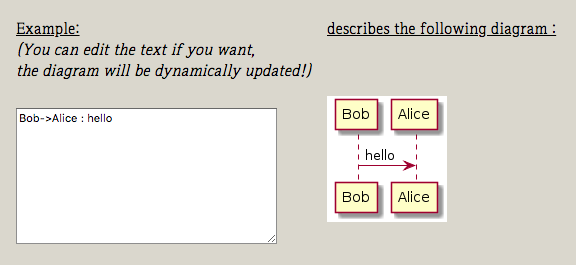

쉽고 빠른 UML 그리기 (PlantUML)
개발 블로그를 하다보면 클래스 다이어그램같은 UML 을 올려야할 때가 있습니다. 그러면 GUI 툴을 이용해서 그려야 하는데, 자주 그리는 사람이 아닌 이상 복사해서 수정할 포맷도 없고 일일이 그리는 것은 상당히 귀찮습니다.
개발 시에도 사용 가능하고 Hexo 쉽게 적용할 수 있는 툴은 없을까 찾다가 PlantUML 이라는 툴을 찾았습니다. 이번 포스팅에서는 코드를 짜듯이 UML을 간편하게 그릴 수 있는 PlantUML 과 Hexo 적용할 수 있는 플러그인 hex-tag-plantuml 을 알아보겠습니다.
PlantUML

이 툴을 이용하면 어떻게 보여질지 신경쓰는 대신 표현해야 할 로직에 집중할 수 있습니다. 해당 로직을 문법에 따라 표현해주면 PlantUML이 알아서 그려줍니다. 선을 하나 하나 그리고 위치를 조정하고 글꼴을 수정하는 등의 추가적인 작업이 없으니 쉽고 빠릅니다. 물론 세부적인 명령으로 디자인도 수정이 가능합니다. 물론 코드를 generate 하는 등 복잡한 설계의 기능까진 할 수 없지만, 블로그에서 UML을 그리기에는 최적의 툴입니다.
지원하는 UML 다이어그램은 다음과 같습니다.
- 시퀀스 다이어그램 (Sequence diagram)
- 유즈케이스 다이어그램 (Usecase diagram)
- 클래스 다이어그램 (Class diagram)
- 액티비티 다이어그램 (Activity diagram)
- 컴포넌트 다이어그램 (Component diagram)
- 상태 다이어그램 (State diagram)
- 객체 다이어그램 (Object diagram)
- 배포 다이어그램 (Deployment diagram)
- 타이밍 다이어그램 (Timing diagram)
UML 이외의 다이어그램도 지원한다고 합니다.
- Salt (그래픽 인터페이스 디자인)
- Archimate Diagram
- Ditaa (PlantUML 과 비슷하게 텍스트로 다이어그램을 그리는 오픈소스)
- Mathematic with AsciiMath or JLaTeXMath notation (수학적 표현을 텍스트로 쉽게 하기)
- Gantt diagram (프로젝트 일정 관리) (beta)
종류도 많고 생소한 것도 많아서 하나씩 페이지에 들어가서 살펴보니 유용한게 많네요. PlantUML 메인 페이지에 있는 online generator 를 이용하면 설치 없이 그려볼 수 있습니다. 여기서 모두 소개하기엔 기능이 너무 많아서 가장 친숙한 클래스 다이어그램을 그려보겠습니다.
클래스 다이어그램
객체 지향 프로그래밍에서는 관련된 데이터와 그 데이터를 사용해서 기능을 제공하는 메소드를 묶어서 하나의 객체(클래스)로 만듭니다. 이 클래스들이 서로 상호작용을 하면서 프로그램이 이루어집니다. 따라서 객체지향 설계는 '어떻게 클래스를 정의하고 어떤 관계로 놓을 것이냐’가 핵심이 됩니다.

이전 포스트 중에 옵저버 패턴을 자바로 구현해 본 포스트가 있습니다. 위키피디아에서 찾은 옵저버 패턴의 클래스 다이어그램을 인용했었는데요, 이 다이어그램을 PlantUML을 이용해서 직접 그려봤습니다. 처음 사용하는데도 문법이 쉬워서 가이드 보고 금방 그릴 수 있었습니다.
차근 차근 그려보기
그럼 차근차근 그려보면서 대략적인 문법을 살펴보겠습니다.
먼저 class 와 interface를 그립니다. Java 와 비슷해서 익숙한 문법입니다.
1 | interface Observer { |
필드와 메소드에 접근제어지시자를 붙여줄 수 있습니다. 그리고 인터페이스에 있는 update 메소드는 추상 메소드로 표시하겠습니다.
- private : -
- protected : #
- package : ~
- public : +
1 | interface Observer { |
Observer 인터페이스를 implements 할 ObserverA, ObserverB 클래스도 추가로 그려줍니다.
1 | class ObserverA { |
이제 클래스 간의 관계를 그려보겠습니다. 관계만 맞으면 화살표 방향은 양쪽 중 어느쪽으로 해도 상관없습니다. 특정 방향은 화살표 중간에 명시해줄 수 있습니다.
- Extension
<|-- - Aggregation
o-- - Composition
*--
1 | Observer <|-- ObserverA |
Extension 은 상속으로 기존 클래스를 확장하는 개념입니다. 상위 클래스의 요소를 가지고 새로운 내용을 추가하거나 기존 내용을 새롭게 정의하여 하나의 클래스를 만든 관계입니다.
Aggregation 과 Composition 은 쉽게 말해 다른 클래스를 '사용’하는 경우입니다. 다른 객체를 사용하기 위해 선언하고 참조하는 등 의존 관계가 형성되고, 두 클래스는 수정의 영향을 같이 받게 됩니다. 단, composition 은 한 클래스가 다른 클래스의 일부인 관계이고, aggregation 은 그렇지 않습니다.
예를 들면, Person 과 Car 는 aggregation 관계로, Car 와 Engine 은 composition 관계로 설정했습니다. Person 객체는 Car 객체를 가지고 있어 Car 객체가 없으면 동작할 수가 없습니다. 다만 차와 사람은 생명주기를 같이하진 않습니다. 반대로 Car 객체는 Engine 객체를 가지고 있지만 composition 관계로 설정했기 때문에 차가 생길 때 엔진 객체도 생성되고 차가 소멸될 때 엔진 인스턴스도 소멸됩니다. 즉, Car 객체가 Engine 객체의 생명주기를 책임집니다.
notifyObservers 메소드에 대해 간략하게 메모를 추가하겠습니다. 메모 또한 상대 위치를 지정해줄 수 있습니다. 마지막으로 타이틀을 달아줍니다.
1 | title Observer Pattern |
완성된 버전과 전체 소스는 다음과 같습니다.
1 | title Observer Pattern |
이외에 클래스 다이어그램에 관한 더 자세한 문법은 링크 를 참고하시면 좋겠습니다.
Hexo 에 적용하기
PlantUML 은 JVM 상에서 동작하고 java -jar 명령어를 이용해 문법에 따라 작성된 text 파일을 다이어그램으로 그린 png 로 바꿔줍니다. 하지만 PlantUML을 지원하는 Hexo 플러그인 hex-tag-plantuml 을 설치하면 따로 PlantUML 을 설치할 필요가 없습니다.
설치하기
1 | npm install hexo-tag-plantuml --save |
사용하기
다음과 같은 태그를 이용해 사용하실 수 있습니다.
1 | {% plantuml %} |
이번 포스팅에서는 각종 다이어그램을 텍스트로 간단하게 그릴 수 있는 PlantUML을 알아봤습니다. 이제 간단하게 보여줄 UML이 필요할 때 쉽게 그릴 수 있습니다.
Related Posts
- [hexo-twitter-plugin]
- [hexo-symbols-count-reading-time-plugin]
- [hexo-markdown-plugins]
- [hexo-change-font-on-hueman-theme]
- [generate-an-emoji-favicon]
- [search-engine-optimization-hexo-plugins]
- [hexo-tag-plugins]
쉽고 빠른 UML 그리기 (PlantUML)